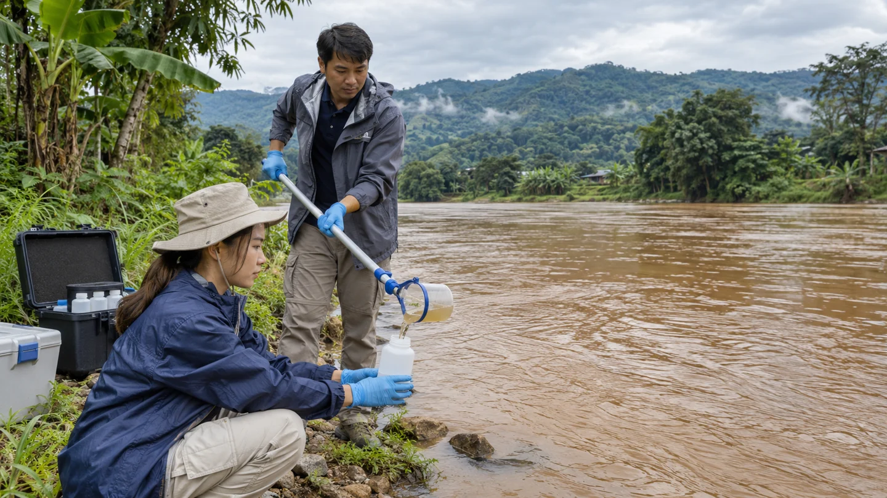
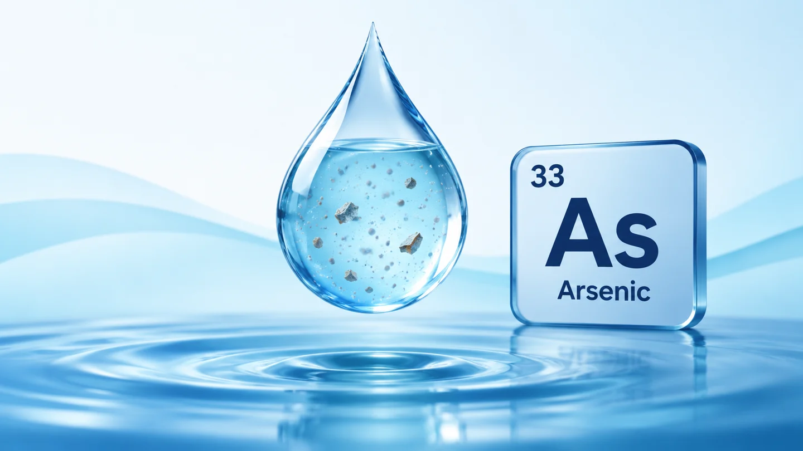

สารหนูในน้ำ อันตรายไหม? ดื่ม ใช้ และลดสารหนูอย่างไร
น้ำที่ใสอาจยังมีสารหนูละลายอยู่ สิ่งสำคัญคือรู้ผลตรวจ เลือกน้ำสำหรับดื่มและทำอาหารให้ปลอดภัย และวางระบบบำบัดให้ตรงกับสิ่งที่ปนเปื้อนจริง

สารบัญ
สารหนูคืออะไร และมาจากไหน
สารหนู (Arsenic หรือ As) เป็นธาตุกึ่งโลหะที่พบในหิน ดิน และน้ำ การผุพังของแร่ตามธรรมชาติ รวมถึงกิจกรรมอย่างเหมืองแร่และการถลุงโลหะ อาจทำให้สารหนูเข้าสู่แหล่งน้ำได้ การระบุสาเหตุของพื้นที่ใดต้องอาศัยการตรวจสอบของหน่วยงานที่เกี่ยวข้อง
รูปแบบที่ควรให้ความสำคัญในน้ำดื่มคือ สารหนูอนินทรีย์ ซึ่งมีความเป็นพิษสูงกว่าอินทรีย์หลายชนิดที่พบในอาหารทะเล คำว่าอินทรีย์ในที่นี้เป็นการแบ่งทางเคมี ไม่ได้หมายถึงอาหารออร์แกนิก

สารหนูที่ละลายอยู่ในน้ำอาจไม่ทำให้น้ำเปลี่ยนสี กลิ่น หรือรส จึงตรวจจากความใสไม่ได้ และไม่ควรชิมน้ำเพื่อทดสอบ การตรวจวิเคราะห์จึงเป็นจุดเริ่มต้นก่อนเลือกวิธีบำบัด
อ่านแหล่งข้อมูล: NIEHS: Arsenic and Your Health
ดื่มน้ำปนเปื้อนสารหนู อันตรายอย่างไร
ความเสี่ยงขึ้นอยู่กับชนิดสารหนู ปริมาณ และระยะเวลาที่ได้รับ การดื่มน้ำหรือใช้น้ำปนเปื้อนประกอบอาหารเป็นช่องทางสำคัญ รวมถึงอาหารที่ปนเปื้อนจากดินหรือน้ำในบางพื้นที่
ได้รับมากในระยะสั้น
อาจคลื่นไส้ อาเจียน ปวดท้อง และท้องเสียรุนแรง หากสงสัยได้รับสารปนเปื้อนร่วมกับอาการรุนแรง ให้รับการรักษาทันทีและแจ้งแหล่งน้ำที่ใช้
ได้รับต่อเนื่องระยะยาว
อาจเกิดผิวหนังเปลี่ยนสีหรือหนาตัว และเพิ่มความเสี่ยงมะเร็งผิวหนัง ปอด และกระเพาะปัสสาวะ รวมถึงมีความสัมพันธ์กับโรคหัวใจและหลอดเลือด
อาการเหล่านี้มีสาเหตุอื่นได้ด้วย จึงใช้วินิจฉัยสารหนูด้วยตัวเองไม่ได้ ผู้ที่มีประวัติใช้น้ำเสี่ยงเป็นประจำควรแจ้งแพทย์เพื่อประเมิน แม้ยังไม่เห็นความผิดปกติ ไม่ควรซื้อยาขับสารพิษใช้เอง
อ่านแหล่งข้อมูล: WHO: ผลต่อสุขภาพและการลดการรับสัมผัส
อ่านแหล่งข้อมูล: ATSDR: การประเมินผู้มีประวัติสัมผัสสารหนู
น้ำมีสารหนู ดื่ม ต้ม หรือใช้อาบน้ำได้ไหม
ถ้าผลตรวจสารหนูเกินเกณฑ์ หรือมีประกาศห้ามใช้ ให้เปลี่ยนแหล่งน้ำสำหรับดื่มและทำอาหารทันที รวมถึงหุงข้าว ชงนม ทำน้ำแข็ง แปรงฟัน และล้างวัตถุดิบที่จะรับประทาน ใช้น้ำจากแหล่งที่ตรวจสอบคุณภาพแล้วระหว่างแก้ไขระบบ
ต้มน้ำหรือเติมคลอรีนช่วยไหม
การต้มและการเติมคลอรีนเพื่อฆ่าเชื้อไม่ใช่วิธีกำจัดสารหนู การต้มไม่ทำให้สารหนูหายไป ส่วนคลอรีนในระบบบำบัดบางแบบอาจช่วยเปลี่ยนรูปสารหนู แต่ยังต้องมีกระบวนการแยกสารหนูออกจากน้ำต่อไป
อาบน้ำ ซักผ้า และล้างจานล่ะ
การรับสารหนูผ่านผิวหนังโดยทั่วไปน้อยกว่าการดื่ม แต่ไม่ได้แปลว่าน้ำจากทุกแหล่งใช้ได้ ควรยึดผลตรวจ ระดับปนเปื้อน และประกาศในพื้นที่ โดยเฉพาะเมื่อมีสารอื่นหรือเชื้อโรคร่วมด้วย ระวังเด็กกลืนน้ำและหลีกเลี่ยงกิจกรรมที่หน่วยงานประกาศให้งด
อ่านแหล่งข้อมูล: มาตรฐานคุณภาพน้ำประปา กปภ.
อ่านแหล่งข้อมูล: กรมอนามัย: คำแนะนำกรณีน้ำปนเปื้อนสารหนู
ข่าวสารหนูในแม่น้ำ ควรติดตามอะไร
ประกาศกรมอนามัยวันที่ 11 พฤศจิกายน 2569 กล่าวถึงการเฝ้าระวังแหล่งน้ำหลายลุ่มน้ำ รวมถึงแม่น้ำสาย กก รวก และโขง พร้อมแนะนำหลีกเลี่ยงการใช้น้ำแม่น้ำสายโดยตรงในกิจกรรมเสี่ยง และติดตามผลยืนยันทางห้องปฏิบัติการ
ผลตรวจแต่ละจุดสะท้อนสถานที่และเวลาที่เก็บตัวอย่าง ไม่ใช่ข้อสรุปว่าน้ำทุกพื้นที่มีค่าเท่ากัน ผู้ใช้ประปาควรติดตามประกาศผู้ให้บริการและผลน้ำหลังผลิตของระบบที่ตนใช้ แยกจากข่าวผลน้ำดิบในแม่น้ำ
- ตรวจวันเวลา จุดเก็บ และชนิดตัวอย่างว่าเป็นน้ำดิบหรือน้ำประปาหลังบำบัด
- ดูว่าผลเป็นการคัดกรองภาคสนามหรือผลยืนยันจากห้องปฏิบัติการ
- ติดตามข้อห้ามเฉพาะพื้นที่และแหล่งน้ำสำรองที่หน่วยงานรับรอง
อ่านแหล่งข้อมูล: ประกาศกรมอนามัย 11 พฤศจิกายน 2569
สารหนูกรองได้ไหม และลดอย่างไร
ลดได้ด้วยกระบวนการที่เลือกให้ตรงคุณภาพน้ำ เช่น การตกตะกอนร่วมกับการกรอง สารดูดซับเฉพาะ การแลกเปลี่ยนแอนไอออน หรือเมมเบรน RO ประสิทธิภาพขึ้นกับรูปสารหนู สภาพน้ำ และการควบคุมระบบ จึงไม่ควรเลือกจากคำว่า “กรองละเอียด” อย่างเดียว
ในน้ำอาจพบทั้ง As(III) และ As(V) หลายกระบวนการลด As(V) ได้ดีกว่า จึงอาจต้องออกซิไดซ์ As(III) ก่อน การออกซิไดซ์เพียงอย่างเดียวไม่ได้เอาสารหนูออก ต้องตามด้วยการแยกหรือจับสารหนูและจัดการของเสียอย่างเหมาะสม
อ่านการเปรียบเทียบเทคโนโลยีและข้อจำกัดใน เครื่องกรองน้ำกรองสารหนูได้ไหม: RO และการตรวจน้ำก่อน–หลังกรอง
อ่านแหล่งข้อมูล: EPA: กระบวนการบำบัดสารหนู
ถังกรองน้ำประปาผิวดินเกี่ยวข้องกับงานนี้อย่างไร
สำหรับระบบน้ำประปาหมู่บ้านที่ใช้น้ำแม่น้ำหรือคลอง ปัญหาอาจมีทั้งความขุ่น ตะกอน สนิมเหล็ก และสารละลายปนเปื้อน จึงต้องประเมินทั้งสายการผลิต ตั้งแต่น้ำดิบ การปรับสภาพน้ำ การกรอง ไปจนถึงการฆ่าเชื้อและจุดใช้น้ำ
ถังกรองน้ำประปาผิวดิน Sunnex เป็นอุปกรณ์ที่นำมาพิจารณาในส่วนจัดการความขุ่นและสนิมเหล็กตามหน้าสินค้า หรือเป็นส่วนหนึ่งของระบบที่ออกแบบเพิ่มเติม หากต้องการลดสารหนู ต้องเลือกกระบวนการและสารกรองเฉพาะ พร้อมทดสอบน้ำเข้า–น้ำออก

ถังกรองน้ำประปาผิวดิน Sunnex
สำหรับประเมินระบบน้ำจากแม่น้ำ คลอง และอ่างเก็บน้ำที่มีปัญหาความขุ่นหรือสนิมเหล็ก มีขนาด 10Q / 15Q / 20Q / 30Q ตามหน้าสินค้า พร้อมบริการติดตั้งและดูแลหลังการขาย
หากพบสารหนู ต้องประเมินกระบวนการลดสารหนูเพิ่มเติมตามผลตรวจน้ำ การเลือกถังหรือขนาดกำลังผลิตเพียงอย่างเดียวไม่ยืนยันประสิทธิภาพลดสารหนูของระบบ
ดูถังกรองน้ำประปาผิวดินสำหรับน้ำดื่ม อาจพิจารณา เครื่องกรองน้ำดื่ม RO หลังเตรียมน้ำเข้าให้เหมาะสม ส่วนภาพรวมงานชุมชนดู เครื่องกรองน้ำประปา และ ระบบน้ำประปาหมู่บ้าน ผลตรวจของหน้างานเป็นหลักฐานยืนยัน ไม่ใช่ชื่อสินค้าหรือความใสของน้ำ
ตรวจน้ำก่อนและหลังกรองให้มั่นใจ
ตรวจก่อนและหลังกรอง
เปรียบเทียบน้ำเข้าและน้ำออกในช่วงการใช้งานเดียวกัน ตามวิธีเก็บตัวอย่างของห้องปฏิบัติการ
1 เก็บน้ำก่อนกรอง
ระบุแหล่งน้ำ จุดเก็บ วันเวลา และสภาพการเดินระบบ
2 เก็บน้ำหลังกรอง
ใช้ภาชนะแยก ติดฉลากชัดเจน และทำตามคำแนะนำแล็บ
3 ตรวจและเทียบเกณฑ์
ดูผลสารหนูเทียบ 0.01 mg/L พร้อมรายการคุณภาพน้ำอื่น
ผลคัดกรองใกล้หรือเกินเกณฑ์ ต้องส่งห้องปฏิบัติการยืนยัน
ติดต่อห้องปฏิบัติการก่อนเก็บตัวอย่าง เพื่อใช้ขวด วิธีรักษาสภาพ และกำหนดส่งที่ถูกต้อง ขอรายการตรวจสารหนูและคุณภาพน้ำอื่นตามวัตถุประสงค์ใช้งาน หากรายงานว่า “ไม่พบ” ให้ดูขีดจำกัดการตรวจประกอบด้วย
หลังติดตั้งหรือปรับระบบควรตรวจยืนยันก่อนนำน้ำมาดื่ม และวางแผนตรวจซ้ำตามความเสี่ยง แหล่งน้ำ และการดูแลสารกรอง ดูขั้นตอนเพิ่มเติมใน วิธีอ่านผลน้ำก่อนและหลังกรอง
คำถามที่พบบ่อย
น้ำใสแต่มีสารหนูได้ไหม
ได้ สารหนูละลายน้ำอาจไม่มีสี กลิ่น หรือรส ต้องใช้ผลตรวจวิเคราะห์ ไม่ใช้ความใสตัดสิน
ถังกรองน้ำประปาผิวดินลดสารหนูได้เลยหรือไม่
ยังสรุปจากชนิดถังไม่ได้ ต้องดูสารกรอง กระบวนการที่ใช้ร่วมกัน คุณภาพน้ำเข้า และผลตรวจหลังบำบัด
ต้มน้ำที่มีสารหนูแล้วดื่มได้ไหม
การต้มไม่กำจัดสารหนู หากพบเกินเกณฑ์ให้เปลี่ยนไปใช้น้ำที่ตรวจสอบคุณภาพแล้วสำหรับดื่มและทำอาหาร
แหล่งข้อมูลอ้างอิง
- WHO: Arsenic
- กรมอนามัย: คำแนะนำประชาชน 11 พฤศจิกายน 2569
- กปภ.: มาตรฐานคุณภาพน้ำประปา
- EPA: Small Entity Compliance Guide for Arsenic
- EPA: Arsenic Treatability Database
- ATSDR: Clinician Brief — Arsenic
- NIEHS: Arsenic and Your Health
ตรวจสอบแหล่งข้อมูล 20 พฤศจิกายน 2569 · เรียบเรียงโดยทีมเนื้อหา Sunnex Technology ข้อมูลสุขภาพอ้างอิงหน่วยงานสาธารณสุข ส่วนการเลือกอุปกรณ์ต้องประเมินผลตรวจและหน้างานเป็นรายระบบ